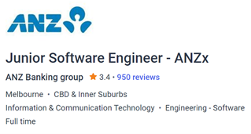

Introduction
Born in Canberra and raised in both Sydney and Canberra, I’ve always had a passion for technology and media. I’ve completed 4 Certificate IV courses at TAFE NSW and worked in a helpdesk position up until recently. I’ve also been playing the original augmented reality game from Niantic, Ingress, since 2016 and now play a key part in bringing the game’s community together.
Quick Facts
- Name: Aiden Howlett
- Student number: 3962116
- Email address: s3962116@student.rmit.edu.au
- Nationality: Australian
- Languages spoken: English
- Education:
- Certificate IV in Screen and Media (Film & TV)
- Certificate IV in Screen and Media (Radio Broadcasting)
- Certificate IV in Web Development
- Certificate IV in Information Technology (Networking)
Interest in IT
As my father has a Master’s in Engineering and worked with broadcasting equipment for many years, naturally I fell into loving all things technology. I was given my first laptop running Windows XP when I was 8. Unfortunately, it had a gruesome demise as my little brother jumped on it not too long after, but regardless it didn’t end there. I can recall learning how to use a computer at school well before this, stuffing around with Microsoft Paint in the classroom with 30-odd Windows 2000 machines, CRT monitors and all.
Since then, I’ve always thought that I preferred a career in media, but recently that’s all changed in part due to the pandemic. I’ve enrolled at RMIT because I firmly believe this is what I want to do for my career and want to take it seriously (something with TAFE NSW doesn’t provide). Also, RMIT are the only university I can enrol at with certainty, whereas in NSW you require a completed TAFE diploma.
I’ve worked a helpdesk position with a small managed service provider for five months, moving out of home for the first time to do it, and found it wasn’t for me (for now) – this was due to a negative workplace environment more than anything, but also the rising cost of living and lower-than-average pay rate has persuaded me to work towards something better.
At RMIT, I expect to learn the skills needed for a role with a larger, better company – already RMIT are exceeding my expectations by being constructive in the method of teaching, something TAFE NSW does not do – so I look forward to the rest of my studies at RMIT.
Ideal Job
My ideal job would have to be a Software Engineer role at a major bank, such as ANZ.
Large banks are slowly turning into technology companies – redesigning internal and customer-facing systems to meet modern requirements. For example, ANZx is ANZ’s technology division, working to transition ANZ’s operations to Google Cloud Platform for increased reliability and user responsiveness. This can be trialled today in the form of ANZ Plus – a ‘neobank’ transactional and savings product suite mainly consisting of a new mobile app built to rival the likes of Bendigo Bank’s acquisition, Up (built by Ferocia, a technology-first start-up) who were the first bank to use Google Cloud Platform in Australia.
The position of Junior Software Engineer with ANZ requires some experience with modern frameworks and programming languages, and ideally experience with Golang, React, Swift, Kotlin, and Google Cloud Platform. Most of all, the company are after applicants with excellent communication skills and a will to learn.
This position is appealing because ANZ’s (and other large banks’) changing attitude to technology is exciting and represents opportunity for younger people who may otherwise be put off by the concept of working for ‘legacy’ brands. ANZ also shows in their description that they trust their staff to produce good work in a professional manner, by including flexible work arrangements.
For this role, the only skills I have suitable are excellent communication skills and the will to learn, so my journey at RMIT will involve taking on the practical skills relating to software engineer roles like this. I have a keen interest in Swift and iOS development, so would consider starting with this first, followed closely by Google Cloud Platform as these are the most useful skills to have and would open alternative roles.
The job listing can be accessed at: https://www.seek.com.au/job/57170514